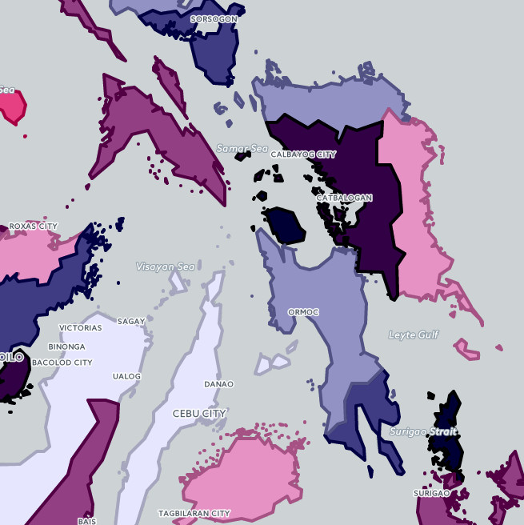
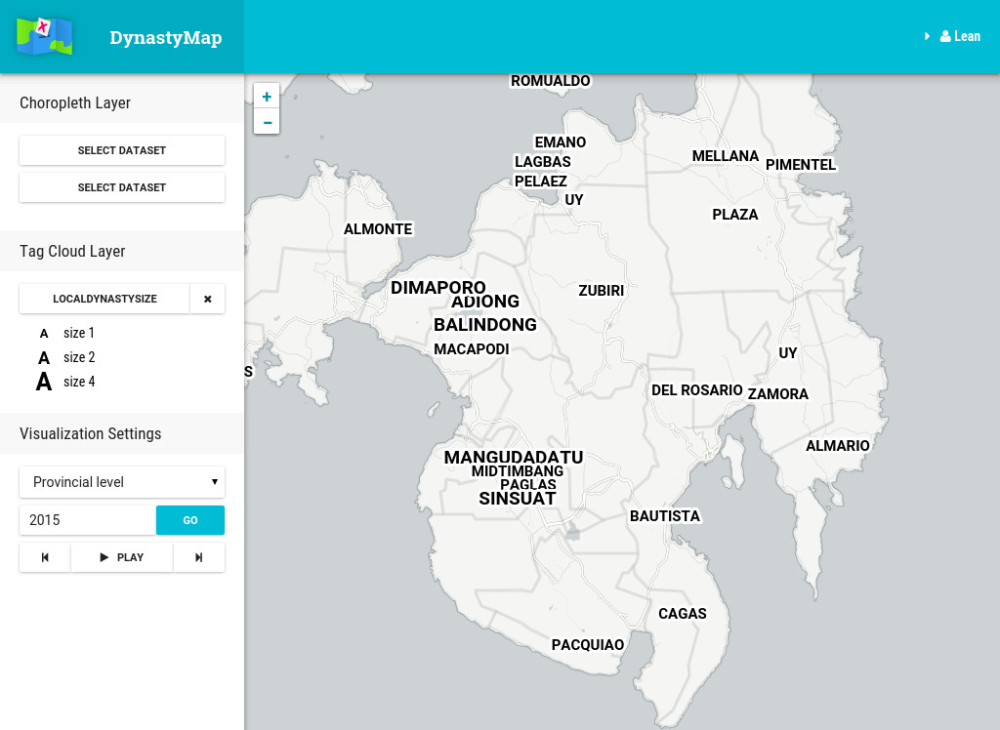
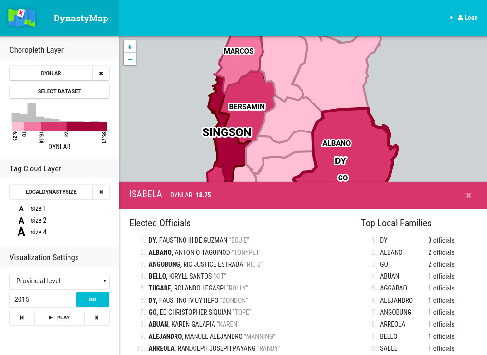

Dynaviz
Visualization of political dynasties in the Philippines.
In Philippine politics, political dynasties are widespread. They are families who have maintained power for multiple generations through control of political positions.
Political dynasties have long been associated with corruption, as they are able to use their power to pursue their own interests at the expense of the public.
Using data visualization, we’ll be able to see their prevalence across the country and gain insights about the correlation of dynasties with poverty and development.
Project details- released
- 2015
- role
- developer
- platform
- Web
- tech
- React, Leaflet, D3, GeoJSON, Python

Yep, Pacquiao, boxing world champion, has (had?) his own dynasty too. Members include brothers, sister-in-law, and his wife.
Dynaviz (2015) is a webapp for visualizing political dynasties. It’s a tool for exploring the prevalence and characteristics of dynasties across the country while comparing them against other variables such as population, poverty indices, and education levels.
This was a final project of mine as an undergraduate student at the University of the Philippines.

Main features of the app are: computation of political dynasty indicators in LGUs, and visualization of dynasties along with various user-uploaded datasets.
Visualizing political family names and sizes
The map shows family names with sizes proportional to the number of positions held by that family.
I also used some political dynasty indicators developed by Mendoza et al (2013) for supplementary visualizations.

This webapp is an SPAmade with React and Backbone.js. I used Leaflet and D3.js for the visualizations.
Server-side is PHP with Slim and Medoo. The two frameworks are pretty light in terms of API, which was good for PHP.
I used Python for data processing, i.e., computation of dynasty variables, GeoJSON map tiles subdivision, and some CSV/GeoJSON preprocessing.
Wireframe design
I got the data from the Commission on Election (COMELEC) website and the Open Data PH. I had to scrape election results (for 2015) from COMELEC’s website because they didn’t have an API or anything.
This project was developed as a requirement (Special Problem) for my Computer Science B.S. degree at UP Manila. The idea of political dynasty visualization came from one of my professors. It was also inspired by Hans Rosling’s visualizations and Trendalyzer.
An instance of the app was hosted on the university’s server, but apparently my user account has already been purged from the server. So, no demo for you! :P